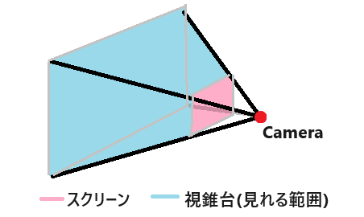

3Dエンジンを作ってみよう
対象読者
ScratchやJavaScript、C++等のGUIが問題なく使える言語で3Dエンジン(レンダラ)を作りたい人、作ってみたい人
高校数学が十分に理解できている人(数ⅡBができていたら十分でしょう)
はじめに(そして私事)
最近作っている物と言えば何でしょうか...
3Dレンダラですかね？理解すれば大して難しくなかったです。
ということで今回は3Dレンダラを作ってみようというテーマで記事を書いていきたいと思います
一応言っておきますが恐らくそう易々と理解できるものではないかと思います(特に回転等の計算)
回転の項目についてはなんとなしで理解した方が良いかと...(自分もそうですし...)
ってことで本題に入りましょうか
まずは基本的なところから
さあ本題に入る、とはいってもまず何をすればよいのでしょうか？
まあそれは結論を言ってしまえば三次元の物をどのようにしてスクリーンに写すか、ということです(この写す方法の事を投影方法と呼ぶ)
これには自分の知る限りでは2種類の手法があり現在一番よく使われている方法は「透視投影」でしょう
もう一方は「平行投影」と呼ばれる方法です。主にCADなどで使われる方法ですね。この投影方法は中学の技術でやったキャビネット図に相当します。
ですが今回はあくまで透視投影です。透視投影は皆さんゲームをやっていたら100%目にします。
そう、3Dゲームなどで使われる投影方法です。逆にこれ以外の投影方法となると広角レンズのような投影ができるゲームとかでしょうか...
ですが大体ああいうのは視覚効果で行っており根本的な投影方法は同じだったりしますからね...
I don't knowですな
まあこのような投影方法で3Dをスクリーンに写すことができるというわけです
では早速その透視投影とやらをやってみようではないか
透視投影をする方法は至ってシンプル。
大前提はカメラの座標が原点にあることです。
そしてメインのアルゴリズムは...
空間上の点のx座標y座標それぞれをz座標で割る
です。とてもシンプル。これは中学レベルの相似の考え方から導出することが可能です。暇ならやってみてください。
ヒントはカメラの視線を底辺とする直角三角形で考える事でしょうか？
$$\left(x',y'\right)=\left(\frac{x}{z},\frac{y}{z}\right)$$さて、これさえ理解してしまえば後は点同士を線でつなぐだけで3Dを描画できます。
あら簡単。もう終わりですか？(※終わりではないです)
カメラを移動させてみよう
さあ、こうなるとカメラを移動させたくなりますね。
その方法はとても簡単ですが、少ししっかり考える必要があります。
というのも、もし間違えてしまうと逆方向に動いてしまうからです。(まあ符号を修正すればいいだけなので大したことではないのですがね)
カメラが動くとき、そのカメラからの相対的な位置関係としてはオブジェクトというのは必ずカメラの動く方向の逆方向に動きます。
少しややこしいですね。とにかくカメラが固定されて動けなかったとしてもそう見せかけることは容易だということです
これで先ほどの透視投影をする大前提を満たしますね。
では式にしてみましょう。
オブジェクトの移動量を$u=\left(a,b,c\right)$とし、カメラの移動量を$v=\left(p,q,r\right)$とする。($u,v$はどちらも3次元ベクトル)
この時のカメラからの相対的な位置関係は
$$u-v=\left(a-p,b-q,c-r\right)$$である
終わりです。あとは先ほどの透視投影の式にこの式を入れれば移動については問題ありません。
移動は各自で操作キーを割り当てていい感じに移動できるようにしてください。スライダー方式でも問題ないでしょう
おや？描画の範囲外に行ったら様子がおかしいぞ...?
ここまで読んで全て実践していたらおそらくこのことに気づいたでしょう。
これを解決させる方法が存在します。それは視錐台の範囲に入ったら描画するというものです
視錐台とは何でしょう？
視錐台とはカメラの視点から見える範囲のことを指し、それがこたつのような形(これを錐台という)をしていることから来ています
視錐台の範囲に入ったことを確かめるためには直線の方程式からその範囲に入っていることを地道に確認するしかないです。
そう、AND条件地獄です。数学の○$\lt x\lt$○とプログラミングは非常に相性が悪い...(Pythonでは謎に数学の時のように入力しても正しい評価になるが)
直線の方程式は$ax+by+cz=d\left(a,b,c,d\in \mathbb{R}\right)$ですね。なので地道に比較するしかない...
でも実は絶対値を使うと多少楽に作れる
係数の値の決め方は画角から考える必要があります。ってことで次は画角の変更方法
画角の変更方法
ここまで来るとみんな画角が変更したくなるものです。(知らんけど)
ということで画角を変更していきましょう
やり方は比較的シンプルですが、三角関数を使うことになります。
これについては画角を変更できるようにしたときに同時にDesmosでグラフ化させているので良ければぜひ見てみてください
一応このグラフで注釈をすると$\cot\left(x\right)$は$\frac{1}{\tan\left(x\right)}$と等しいです。つまり$\tan\left(x\right)$の逆数ですね。(逆関数じゃあないよ！)
導出はスクリーンの高さの1/2を直角三角形の高さとしたサインコサイン三角形の比で考えると良いでしょう
$F_l$変数は焦点距離を求めています。焦点距離から調整しようというわけですね
このグラフで式の関係も示されてるので話すことがないですね... 次に進みましょう。
カメラを回転させてみよう
さて回転です。カメラを回転させてみましょう。ここまで来たら回転もやりたいですねぇ
ですが回転は大変です。今回は回転行列を使用せずにやってみたいと思います。
回転行列は計算が大変なので実はちょっとよろしくない。そこでクォータニオンという回転方法を使っていきます。
これのメリットは非常にたくさんあり、3Dの回転、姿勢を表すのに最も適していると思います。
唯一のデメリットは保存される値を見てもどのような回転かがイメージしにくいことですね。
ではクォータニオンとはいったい何なのでしょうか？
クォータニオンとは数学的には複素数の拡張を行った物です
クォータニオン(四元数)の定義
次の数$p$について次のように定義したとき
$$p=w+xi+yj+zk\left(x,y,z,w\in\mathbb{R}\right)$$右辺の$i,j,k$が次の性質をもつならばこの$p$を四元数(クォータニオン,英: Quaternion)と呼ぶ
$$i^2=j^2=k^2=ijk=-1$$プログラミングで複素数ってどうやって扱うねんって感じがしますがこれはベクトルに置き換えて考えることで実現させます
$$w+xi+yj+zk\rightarrow\left(x,y,z,w\right)$$そしてそれぞれの値はどのように決めるのかというと、一番簡単なのは任意の軸からどのくらい回転したかを出す方法です
任意の単位ベクトル$\vec{u}=\left(u_x,u_y,u_z\right)$を$\theta$回転させた際のクォータニオンへの変換は
$$ x=u_x\sin\left(\frac{\theta}{2}\right)$$$$ y=u_y\sin\left(\frac{\theta}{2}\right)$$$$ z=u_z\sin\left(\frac{\theta}{2}\right)$$$$ w=\cos\left(\frac{\theta}{2}\right) $$です。さあこいつをどのようにして使うのでしょうか？その答えの前にまずクォータニオン同士の積を定義しておきましょう
クォータニオン$p=\left(p_x,p_y,p_z,p_w\right),q=\left(q_x,q_y,q_z,q_w\right)$の積$q\times p$を次のように定義する
$$ \begin{eqnarray} q\times p&=&(q_wp_x-q_zp_y+q_yp_z+q_xp_w,\\&&q_zp_x+q_wp_y-q_xp_z+q_yp_w,\\&&-q_yp_x+q_xp_y+q_wp_z+q_zp_w,\\&&-q_xp_x-q_yp_y-q_zp_z+q_wp_w) \end{eqnarray} $$※注意: 交換法則は成り立ちません
結論から言ってしまえば次のような計算をすることで原点からの座標点を回転させることができます。
$$ q\times \vec{v}\times \bar{q} $$($\bar{q}$は$q$の共役クォータニオン)
これだけです。クォータニオンとベクトルの積はw要素を0としてベクトルをクォータニオンのように扱い、計算すれば可能です。(最終的にw要素は破棄します)
特に回転行列に直したりだとかそういう必要はありません。このように計算するだけで回転後のベクトルをそのまま取得できます。
なぜこのようになるかは自分の勉強不足で説明できません...(すまん)
また、現在の回転の状態と新たな回転を加えて計算するという方法を取る場合は次のように計算すればいいです。
現在の回転を$p$、新たに回転を加えるクォータニオンを$q$とすると、回転を加えた後のクォータニオンは$q\times p$である
気を付けなければならないのは、新たに加える回転が先になるということです。
これも同様にこの通り計算するだけで目的のものを得ることができます
さて、先ほどから飛ばしていた共役クォータニオンについて説明しましょうか
共役クォータニオンは単純に逆回転を示します。
その逆回転の求め方は簡単。
クォータニオンのw要素以外を負の数にするだけです。
つまり、こういうこと。
$$ \bar{q}=\left(-q_x,-q_y,-q_z,q_w\right) $$簡単ですね。
面を正しく描画してみよう
面を正しく描画してみよう、ということで次は面を描画するのですが同じ色なら簡単ですね。
ただ自由な四角形を塗るだけです。しかし！
色が付いたりテクスチャが付いたりすると話は違う。
隠れる面が何かを探さなければなりません！
そのためにはどうしたらいいのでしょうか？
それについて説明します。
まず、隠れる面について考え、描画等の処理を行うことを陰面処理と言います
この陰面処理をするには主に二つの方法が存在します。
Z-バッファ法
Z-ソート法
この二つの方法の内、個人的にはZ-ソート法をお勧めしますが、もし半透明等の色を設定しないことを前提にするならZ-バッファ法の方が処理速度について圧倒的に速いです。
というのも処理の仕方が違います。
Z-ソート法は一番遠い点から描画していく方法。
Z-バッファ法は一番近い点のみを描画する方法。
それだけです。ちなみに最初は描画点ごとではなく描画面ごとで作るといいですよ
描画点はかなり大変ですからね。実際面だけで考えた方が処理量も減りますしオブジェクト同士が重ならないなら描画面ごとでも遜色ないです。
どちらも描画対象をソートしなければなりません。
なのでソートアルゴリズムについて調べるいいと思います。
これだけですね
そのほかの技術
ここで紹介した物以外にも様々な技術があります。
大体ここで紹介してるのは自分が説明できない技術です。(やってなかったり理解できてなかったり...)
*が付いたものは3D以外の場面でも使われます。
シェーディング
レイトレーシング
メタボール
球面回転補間
テクスチャマッピング
環境マッピング
グローバル・イルミネーション
フォトンマッピング
ブーリアン
アンチエイリアシング*
サブサーフェス・スキャタリング
異方性フィルタリング
ブルーム効果
モーションブラー*
ボリュームフォグ
作成例
操作方法
前進: W
後退: S
右移動: D
左移動: A
上移動: スペース
下移動: 左Shift
上回転: 上矢印
下回転: 下矢印
右回転: 右矢印
左回転: 左矢印
時計回り回転: M
反時計回り回転: N
リセットボタン:
参考文献等々
ゲームプログラミング/3Dグラフィック - Wikibooks